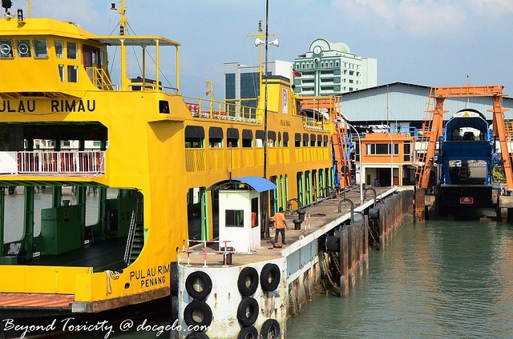

My Mini Guide to George Town, Penang
While my family and I have been living and working in Penang for almost 3 years now, I have not written yet a blog post summarizing the reasons why Penang is a must-visit place in Malaysia. So I was inspired by a travel magazine from Singapore that circulates around Asia where one of my amateur travel photos was fortunately published. Below is my mini-guide for first-time travelers to Pulau Pinang. Enjoy! :)
Why Go?
Experience diversities in this cultural melting pot in Southeast Asia where Malays, Indians and Chinese blend harmoniously. Heritage trails, gastronomic delights, resorts and beaches can easily lure the traveler in you to bring your feet in this Northwestern Malaysian State.
When To Go?
George Town Festival 2013 runs from June 07 to July 07 and during this month-long celebration of the anniversary of inscription of Penang’s capital as one of the UNESCO’s World Heritage Sites, Penangites’ culture and traditions are echoed in dances, street and theatrical performances, art exhibits and many more. However, one must know that revelry of each ethnic community in Penang is almost whole-year-round. The island’s sunny-weather also dictates no biases on when to plan a trip to George Town.
How To Go?
George Town is so accessible via air, land and sea. Fly directly from Singapore or Kuala Lumpur to Penang with Air Asia or other airlines. Take a bus from Singapore or Kuala Lumpur to Butterworth or a train ride from Bangkok to Penang Sentral and hop on the ferry at the jetty in Butterworth to reach George Town in Pulau Pinang (Penang island) from Seberang Perai (mainland). The iconic ferry ride takes about 12-15 minute trip but waiting may be a little bit longer. Alternatively, one may take a taxi ride from either the Penang International Airport to George Town (or take the public commuter, Rapid Penang bus), or take a taxi cab from Penang Sentral Bus Station in Butterworth after alighting off the bus or train via the 13.5 kilometer-Penang Bridge, the longest in Southeast Asia.